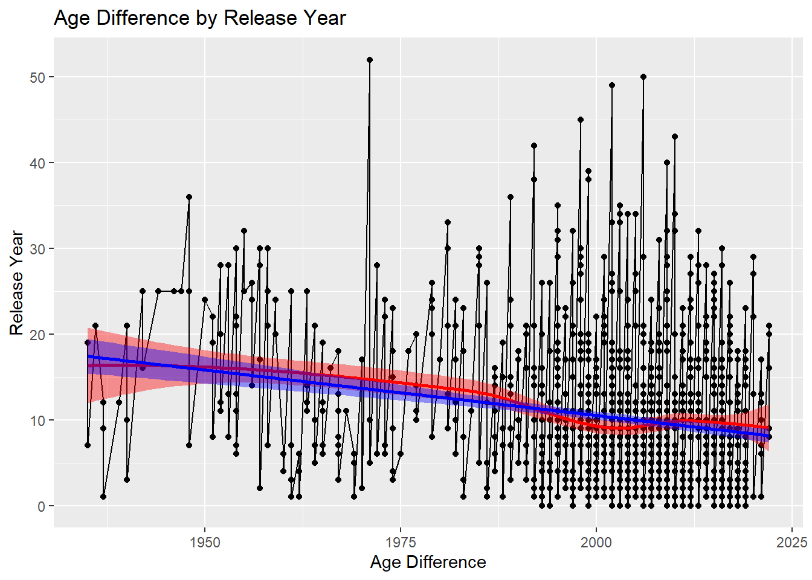
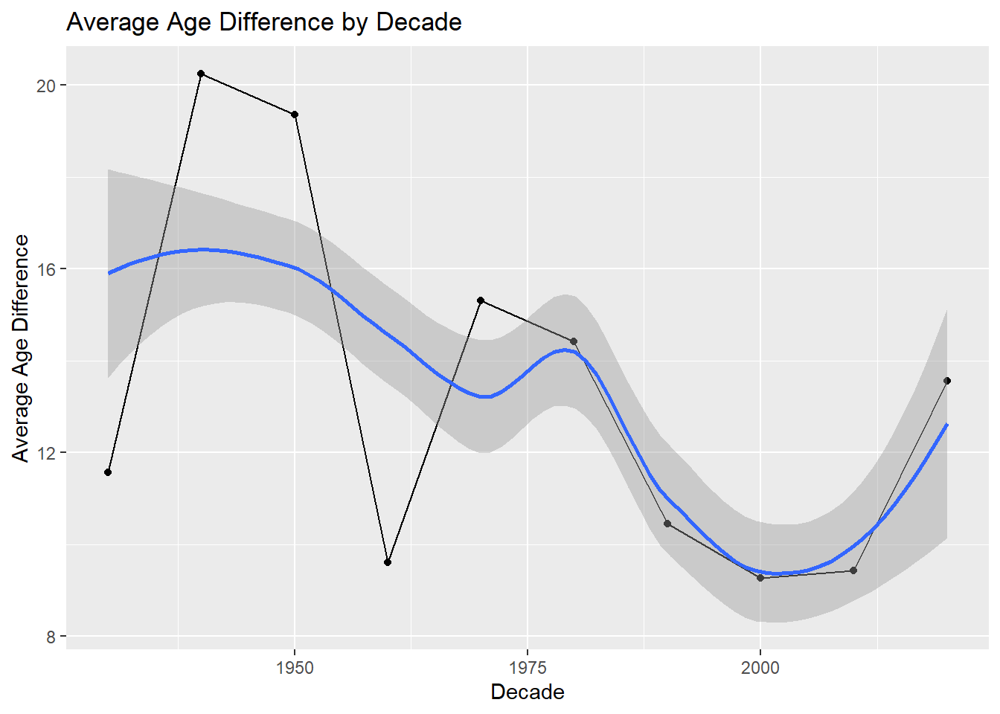
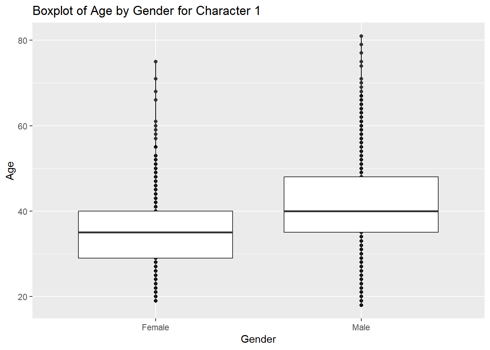
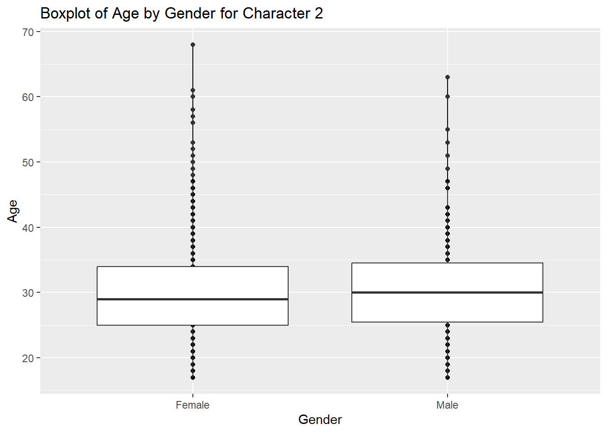
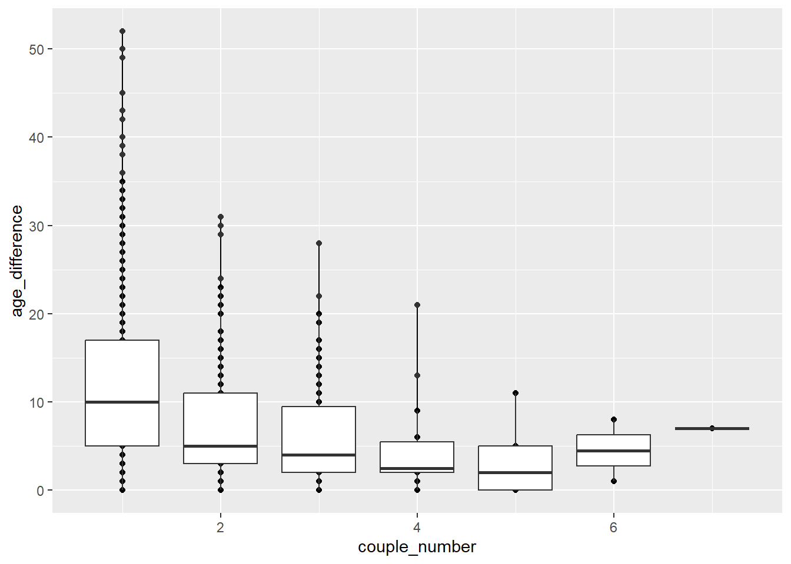

The GitHub repository for TidyTuesday was cloned from https://github.com/rfordatascience/tidytuesday, and the CSV file for 2/14/2023 was copied and pasted into the data folder of this portfolio.
Rows: 1155 Columns: 13
── Column specification ────────────────────────────────────────────────────────
Delimiter: ","
chr (6): movie_name, director, actor_1_name, actor_2_name, character_1_gend...
dbl (5): release_year, age_difference, couple_number, actor_1_age, actor_2_age
date (2): actor_1_birthdate, actor_2_birthdate
ℹ Use `spec()` to retrieve the full column specification for this data.
ℹ Specify the column types or set `show_col_types = FALSE` to quiet this message.
Overall, it appears that the original data given by TidyTuesday is pretty clean already, so I will be modifying column order so that it feels easier to read across the variables. I will also be modifying gender for each character to read as “Male” or “Female” and marking each decade that the movie was released.
Move Columns
# Desired Order: Movie Name, Release Year, Director, ## Actor 1 Name, Actor 1 Birthdate, Actor 1 Age, ## Actor 2 Name, Actor 2 Birthdate, Actor 2 Age, ## Age Difference, Couple Numberdata <- data %>%# Actor 1relocate(actor_1_name, .after = director) %>%relocate(actor_1_birthdate, .after = actor_1_name) %>%relocate(actor_1_age, .after = actor_1_birthdate) %>%# Actor 2relocate(actor_2_name, .after = actor_1_age) %>%relocate(actor_2_birthdate, .after = actor_2_name) %>%relocate(actor_2_age, .after = actor_2_birthdate) %>%# Age Difference + Couple Numberrelocate(age_difference, .after = actor_2_age) %>%relocate(couple_number, .after = age_difference)
Change Gender to “Male” and “Female”
data <- data %>%mutate(character_1_gender =case_when( character_1_gender =="man"~"Male", character_1_gender =="woman"~"Female")) %>%mutate(character_2_gender =case_when( character_2_gender =="man"~"Male", character_2_gender =="woman"~"Female"))
ggplot(data, aes(x = release_year, y = age_difference)) +geom_point() +geom_line() +geom_smooth(method ="loess", color ="red", fill ="red") +geom_smooth(method = lm, color ="blue", fill ="blue") +labs(x ="Age Difference", y ="Release Year", title ="Age Difference by Release Year")
`geom_smooth()` using formula = 'y ~ x'
`geom_smooth()` using formula = 'y ~ x'

According to this graph, it does appear that age difference decreases as time passes. However, the lines become “messy” towards the end, so I will try to tackle this by grouping by decade.
`summarise()` has grouped output by 'Decade'. You can override using the
`.groups` argument.
Graph of Average Age Difference for Each Decade
ggplot(data = data_2, aes(x = Decade_Numeric, y = Average_Age_Difference_by_Decade)) +geom_point() +geom_line() +geom_smooth() +labs(x ="Decade", y ="Average Age Difference", title ="Average Age Difference by Decade")
`geom_smooth()` using method = 'loess' and formula = 'y ~ x'

Again, it seems that there is an overall decrease in age difference from the 1940s to about the year 2000, but we see age difference increasing once again from the 2000s onward.
Are Men Typically Older than Women in These Movies?
# Character 1 Ageggplot(data, aes(x = character_1_gender, y = actor_1_age)) +geom_point() +geom_line() +geom_boxplot() +labs(x ="Gender", y ="Age", title ="Boxplot of Age by Gender for Character 1")

# Character 2 Ageggplot(data, aes(x = character_2_gender, y = actor_2_age)) +geom_point() +geom_line() +geom_boxplot() +labs(x ="Gender", y ="Age", title ="Boxplot of Age by Gender for Character 2")

Yes, it does appear that men are usually slightly older than women in these films.
Does Couple Number Impact Age Difference?
ggplot(data, aes(x = couple_number, y = age_difference, group = couple_number)) +geom_point() +geom_line() +geom_boxplot()

As we can see from the graph, the lower the couple number, the greater the age difference in general. It is interesting, though, that we see increasing age difference once again for couple numbers 6 and 7.